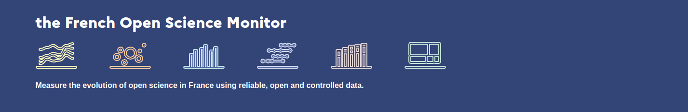
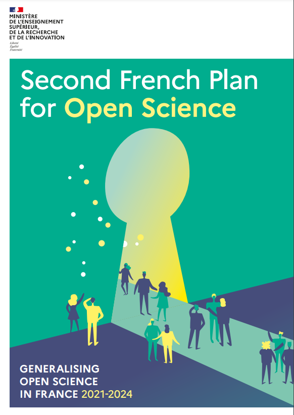

TODO_DATE
TODO_EVENT
TODO_AUTHOR
TODO_AUTHOR_ROLE


Objectives
National Plan for Open Science in 2018, the monitor has been designed
as:
-
👑 a sovereign and evolving tool for assessing the impacts of the open science
public policy
-
🔧 a strategic tool to refine and adjust open science public policies
- 👩🔬 a lever for improving knowledge of French scientific production, beyond the Open Science aspects
